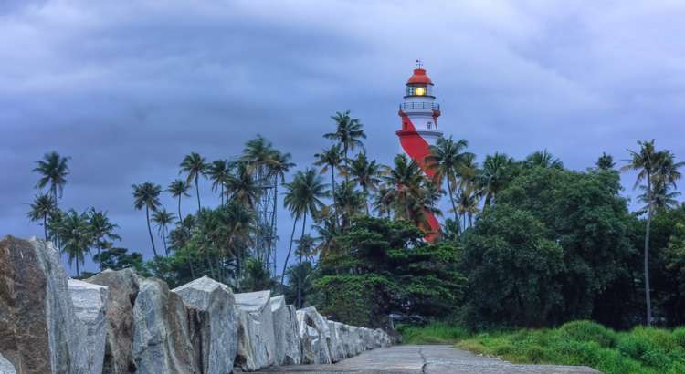
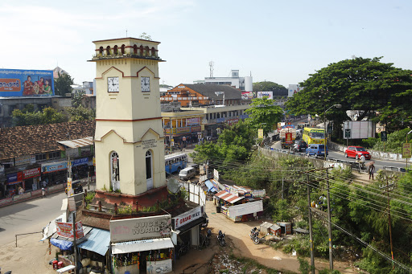

Tangasseri Lighthouse
Tangasseri Lighthouse or Thangassery Lighthouse is situated at Tangasseri in Kollam city of the Indian state of Kerala.
Read More
Jadayu Para
Jadayu Para Earth's Centre really has something for everyone and it's a great place to spend an entire day on your next visit to Kerala, India!
Read More

Kollam
Kollam is a city in the state of Kerala, on India's Malabar Coast. It’s known as a trade hub and for its beaches, like lively Kollam and secluded Thirumullavaram.
Read More